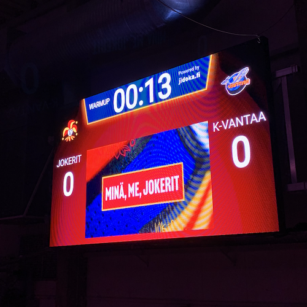
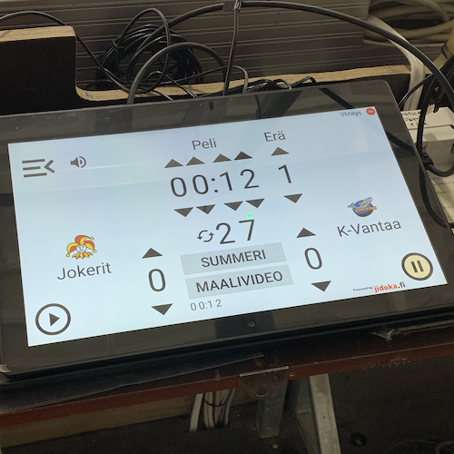

Jidokan tulostaulujärjestelmä


Työssäni Jidoka Technologiesin R&D-tiimissä kehitän tulostaulujärjestelmää. Tulostaulujärjestelmä on IoT-kokonaisuus, joka koostuu pähkinänkuoressa
- Android-käyttöjärjestelmällä varustetusta ohjaustabletista
- Android-käyttöjärjestelmällä varustetusta mediatietokoneesta
- hubista, jonka välityksellä edellä mainitut laitteet kommunikoivat MQTT-viestein.
Käytännön työ on uusien ominaisuuksien kehittämistä ja bugien korjaamista.
Teknologiat
Java
HTML5
CSS
JavaScript
XML
MQTT
Azure DevOps